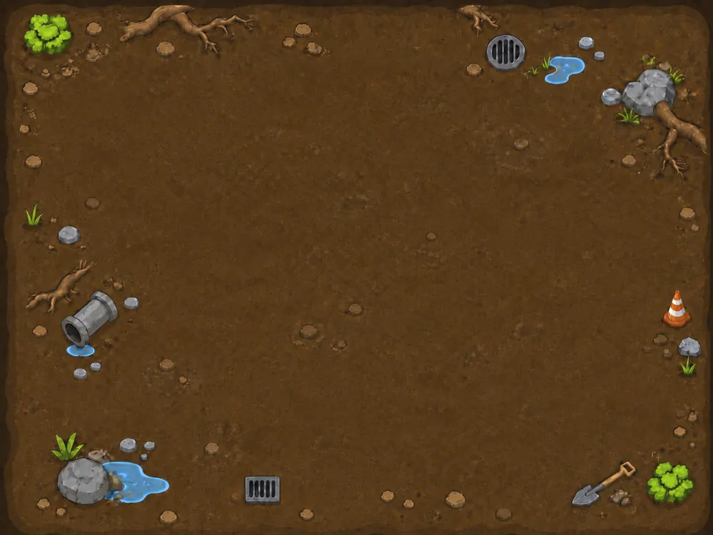

Missão: Percorra TODAS as tubulações exatamente UMA VEZ para resgatar o cachorro.
Primeiro, escolha o poço de acesso (onde o tripé será posicionado). Depois, digite o próximo poço para se mover.

Rota: ---
Tentativas
0
Tubos
0/10
🏆
MISSÃO CONCLUÍDA COM SUCESSO!
Parabéns! Você percorreu todas as 10 tubulações sem repetir nenhuma!
O cachorro foi resgatado com sucesso. 🐕
Você descobriu um Caminho Euleriano!
Sempre deve começar (ou terminar) em vértices de grau ímpar.
💥
FALHA NA MISSÃO!
Você ficou sem movimentos possíveis antes de percorrer todas as tubulações.
Tente outra rota. Lembre-se: cada tubulação só pode ser usada uma vez!